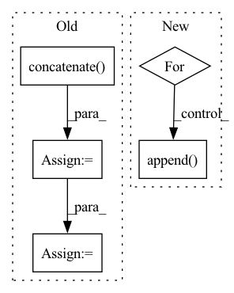

Pattern ID :22623

Before Change
labels = [[item[1]] for item in batch]
values = np.concatenate(values, axis=0).astype(_DTYPE)
values = torch.from_numpy(values)
labels = np.concatenate(labels, axis=0).astype(_DTYPE)
labels = torch.from_numpy(labels)
return values, labels
After Change
except:
raise ValueError("No data")
ret = []
for i in range(n_fields):
values = [[item[i]] for item in batch]
values = np.concatenate(values, axis=0).astype(_DTYPE)
values = torch.from_numpy(values)
ret.append(values)
return tuple(ret)
def intervals_iou(itv_a:Tensor, itv_b:Tensor, iou_type="iou") -> Tensor:
In pattern: SUPERPATTERN
Frequency: 3
Non-data size: 5
Instances
Fragment ID: 71406592
Project Name: deeppsp/torch_ecg
Commit Name: ee05a1edb7783d4928b0eea028455c71eb1fe050
Time: 2021-10-14
Author: wenh06@gmail.com
File Name: torch_ecg/utils/utils_nn.py
M Class Name: AnonimousClass
N Class Name: AnonimousClass
M Method Name: default_collate_fn(1)
N Method Name: default_collate_fn(1)
M Parent Class:
N Parent Class:
M File Name: torch_ecg/utils/utils_nn.py
N File Name: torch_ecg/utils/utils_nn.py
M Start Line: 515
M End Line: 521
N Start Line: 513
N End Line: 523
'>
Before Change
if sources is None:
sources = wave
else:
sources = np.concatenate([sources, wave], axis=0)
segment_IDs.append("{}_{}-{}".format(source_data["utterance-ID"], start, end))
mixture = torch.Tensor(mixture).float()
sources = torch.Tensor(sources).float()
return mixture, sources, segment_IDs
After Change
sources = []
for _source in __sources__:
source, sr = sf.read(sources_data[_source]["path"])
source = source[start_idx: end_idx].mean(axis=1)
print(source.shape)
sources.append(sources)
return mixture, sources
def __len__(self):
'>
Fragment ID: 71406608
Project Name: tky823/dnn-based_source_separation
Commit Name: 550c9be6c6db5a89b57716fc49f1c95f913c05ad
Time: 2020-12-29
Author: 40362510+tky823@users.noreply.github.com
File Name: egs/dsd100/common/src/dataset.py
M Class Name: WaveDataset
N Class Name: WaveDataset
M Method Name: __getitem__(2)
N Method Name: __getitem__(2)
M Parent Class: DSD100Dataset
N Parent Class: DSD100Dataset
M File Name: egs/dsd100/common/src/dataset.py
N File Name: egs/dsd100/common/src/dataset.py
M Start Line: 50
M End Line: 74
N Start Line: 33
N End Line: 50
'>
Before Change
os.path.join(output_dir, f"round_{idx}"), "bias_table.csv"))
bias_table["example_id"] = bias_table["example_id"].map(
lambda x: eval(x).decode("UTF-8")) // pylint:disable=eval-used
ids = np.concatenate(list(
ds.map(lambda example: example["example_id"]).batch(
batch_size).as_numpy_iterator())).tolist()
ids = list(map(lambda x: x.decode("UTF-8"), ids))
subgroup_labels = list(
ds.map(lambda example: example["subgroup_label"]).batch(
batch_size).as_numpy_iterator())
After Change
os.path.join(
os.path.join(output_dir, f"round_{idx}"), "bias_table.csv"))
predictions_merge = merge_subgroup_labels(ds, bias_table, batch_size)
for subgroup_id in range(num_subgroups):
prob_i = (predictions_merge["subgroup_label"]
== subgroup_id).sum() / len(predictions_merge)
round_idx.append(idx)
subgroup_ids.append(subgroup_id)
num_samples.append(len(predictions_merge))
prob_representation.append(prob_i)
return pd.DataFrame({
'>
Fragment ID: 71406595
Project Name: google/uncertainty-baselines
Commit Name: f5b53459d654b40668528e806a24776b53864278
Time: 2022-11-03
Author: no-reply@google.com
File Name: experimental/shoshin/evaluate_model_lib.py
M Class Name: AnonimousClass
N Class Name: AnonimousClass
M Method Name: evaluate_active_sampling(5)
N Method Name: evaluate_active_sampling(4)
M Parent Class:
N Parent Class:
M File Name: experimental/shoshin/evaluate_model_lib.py
N File Name: experimental/shoshin/evaluate_model_lib.py
M Start Line: 34
M End Line: 59
N Start Line: 68
N End Line: 92
'>
Before Change
labels = [[item[1]] for item in batch]
values = np.concatenate(values, axis=0).astype(_DTYPE)
values = torch.from_numpy(values)
labels = np.concatenate(labels, axis=0).astype(_DTYPE)
labels = torch.from_numpy(labels)
return values, labels
After Change
except:
raise ValueError("No data")
ret = []
for i in range(n_fields):
values = [[item[i]] for item in batch]
values = np.concatenate(values, axis=0).astype(_DTYPE)
values = torch.from_numpy(values)
ret.append(values)
return tuple(ret)
def intervals_iou(itv_a:Tensor, itv_b:Tensor, iou_type="iou") -> Tensor:
'>
Fragment ID: 71406589
Project Name: deeppsp/torch_ecg
Commit Name: ee05a1edb7783d4928b0eea028455c71eb1fe050
Time: 2021-10-14
Author: wenh06@gmail.com
File Name: torch_ecg/utils/utils_nn.py
M Class Name: AnonimousClass
N Class Name: AnonimousClass
M Method Name: default_collate_fn(1)
N Method Name: default_collate_fn(1)
M Parent Class:
N Parent Class:
M File Name: torch_ecg/utils/utils_nn.py
N File Name: torch_ecg/utils/utils_nn.py
M Start Line: 515
M End Line: 521
N Start Line: 513
N End Line: 523